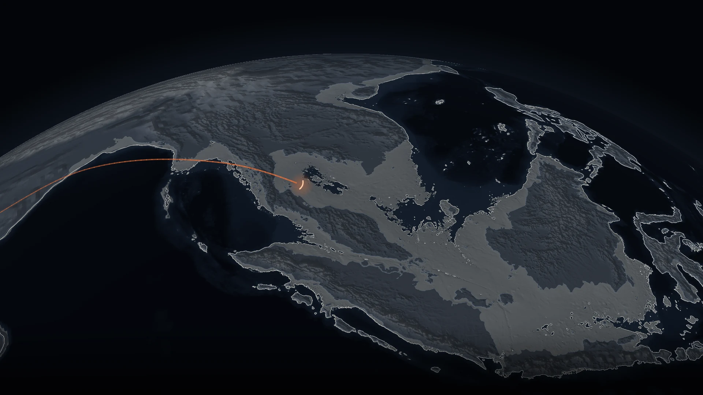
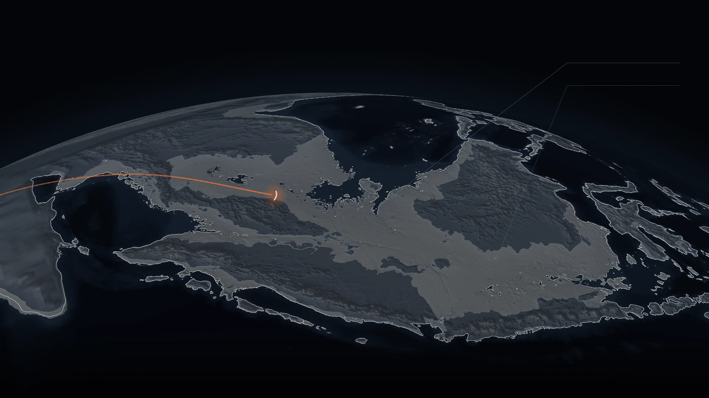
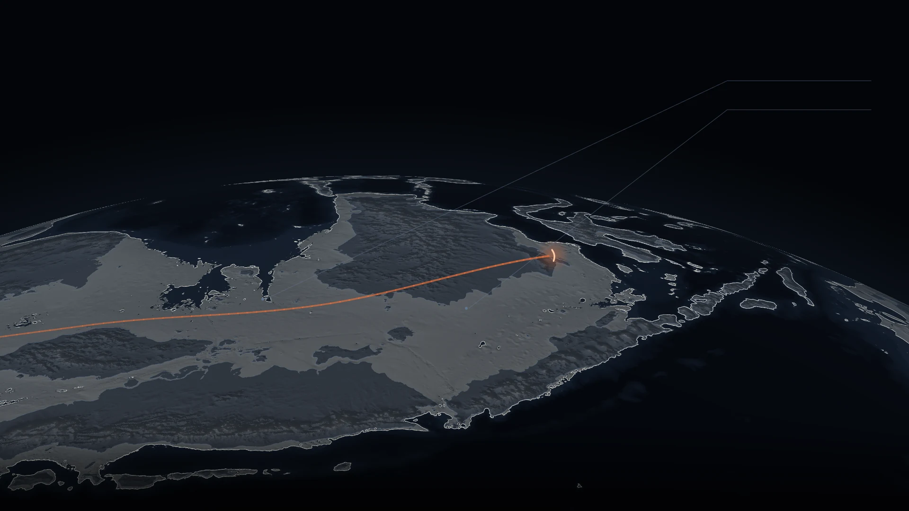
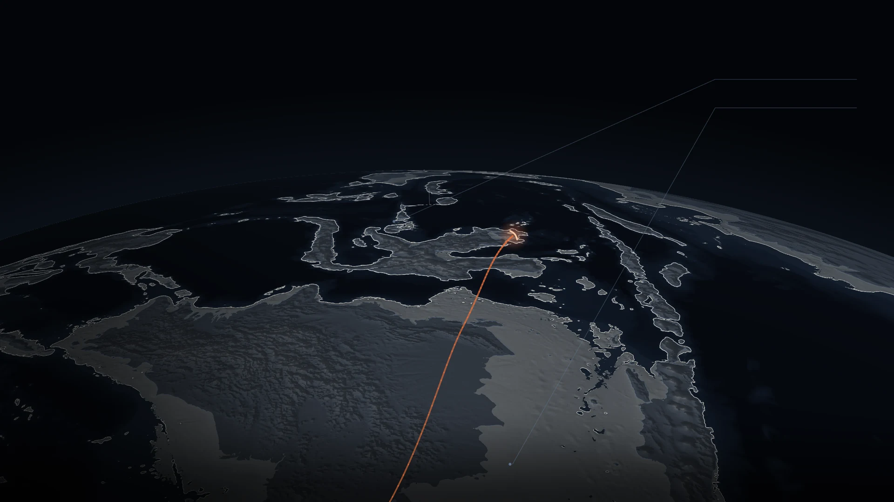
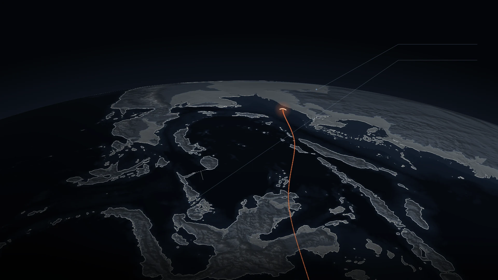
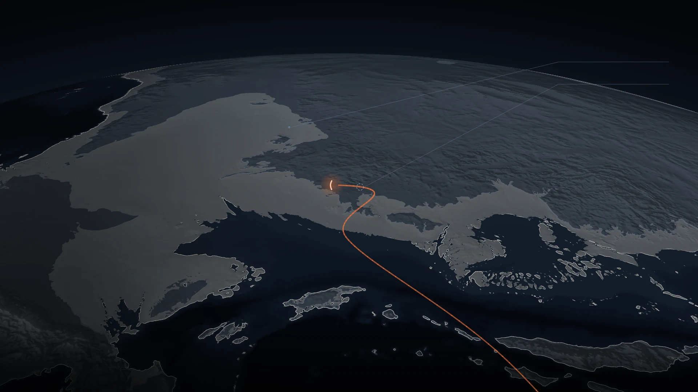
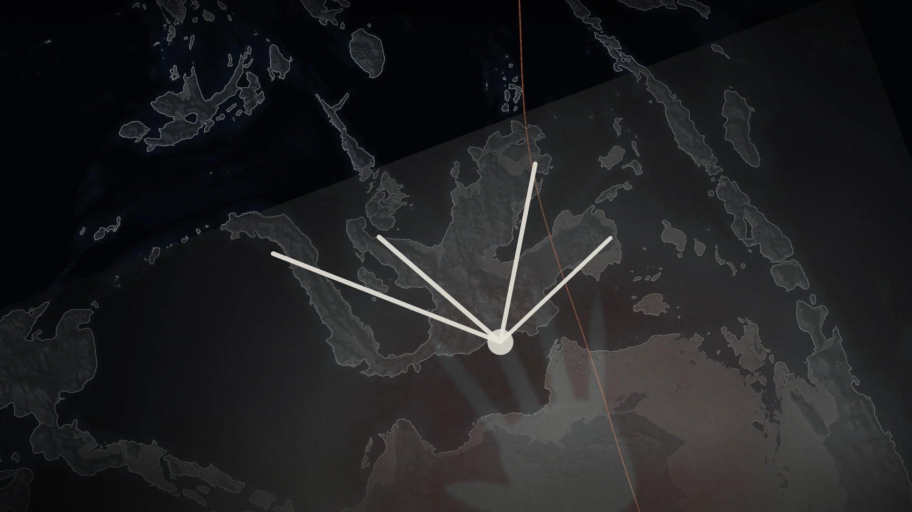
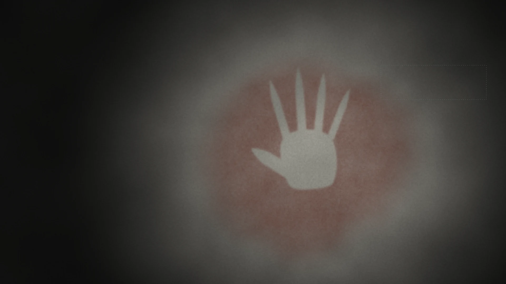

THE STATIC ATLAS
Beat 06 · The crossing to Sahul
Act II · 50,000 – 43,000 BP · motion 4
Somewhere between fifty and forty‑three thousand years ago — and the rocks argue for older — people put out onto open water toward land they could not see, and reached a continent nobody had ever stood on. This is beat 06 of One Ember.
This page is the film’s other half. The film is desktop, scroll and WebGL; this is the same beat as eight still frames, baked from the same shader at the same eight values of the film’s single time variable, so the two artifacts cannot disagree about what the world looked like. Every word on this page is text, not pixels.
It is also the mobile experience, the reduced‑motion fallback, the no‑JavaScript fallback, the crawler content, and the answer for a browser that has switched WebGL off.

SEA LEVEL -68.3 M · DRY LAND +28% ON TODAY, 92–156°E
The camera comes in over Sundaland as beat 05 lets go. The sea stands sixty‑eight metres below today’s, and Borneo, Sumatra and Java are not islands in this frame: they share one piece of land with the Asian mainland.

- SUNDABORNEO, SUMATRA AND JAVA, JOINED TO THE MAINLAND
- THE PALE GROUNDLAND THAT IS UNDER WATER TODAY
SEA LEVEL -72.1 M · DRY LAND +30% ON TODAY, 92–156°E
The pale ground is the shelf — land standing dry here that is under water today. Across the beat, dry land inside the box the film measures, ninety‑two to a hundred and fifty‑six degrees east, grows from 23.75 per cent to 30.88 per cent: a gain of thirty per cent on today.

- SUNDABORNEO, SUMATRA AND JAVA, JOINED TO THE MAINLAND
- THE PALE GROUNDLAND THAT IS UNDER WATER TODAY
SEA LEVEL -76.5 M · DRY LAND +31% ON TODAY, 92–156°E
The light travels east across a shelf that is standing dry. The head is a population and not a person; warm light in this film is only ever people, the earth they cross is slate, ice and bone, and no word on either artifact is drawn in a people‑colour.

- WALLACEANEVER BRIDGED, AT ANY SEA LEVEL IN THE RECORD
- THE PALE GROUNDLAND THAT IS UNDER WATER TODAY
They could not see it.They went anyway.
SEA LEVEL -73.8 M · DRY LAND +30% ON TODAY, 92–156°E
Seventy point five kilometres. Not the narrowest crossing in Wallacea — the widest single hop that any island‑hopping route from Sunda to Sahul must include, minimised over every route there is. The sea falls a hundred and thirty‑one metres from here to the lowstand and that floor moves to seventy point four.
| Wallacea never bridged | no date | solid | Bird, M. I. et al. (2018). Palaeogeography and voyage modeling indicates early human colonization of Australia was likely from Timor-Roti. Quaternary Science Reviews 191, 431–439. |
|---|

- SAHULAUSTRALIA, NEW GUINEA AND TASMANIA: ONE CONTINENT
- WALLACEANEVER BRIDGED, AT ANY SEA LEVEL IN THE RECORD
ARRIVAL · 50,000–43,000 BP · GENETIC
DRAWN ON THE TIME RAIL, NOT ON THE MAP
SEA LEVEL -75.7 M · DRY LAND +31% ON TODAY, 92–156°E
The rocks and the genomes disagree about when this happened, and the film does not adjudicate. Madjedbebe reads sixty‑five to fifty‑nine thousand years from the sediment; the genomes read fifty to forty‑three. The disagreement is drawn on the time rail and never on the map, because it is a claim about years and not about where anybody was.
| Madjedbebe | 65,000 – 59,000 BP | contested | Clarkson, C. et al. (2017). Human occupation of northern Australia by 65,000 years ago. Nature 547, 306–310. Allen, J. & O'Connell, J. F. (2020). A different paradigm for the initial colonisation of Sahul. Archaeology in Oceania 55, 1–14. Sümer, A. P. et al. (2024). Earliest modern human genomes constrain timing of Neanderthal admixture. Nature 638. |
|---|---|---|---|
| Arrival in Sahul | 50,000 – 43,000 BP | contested | Sümer, A. P. et al. (2024). Earliest modern human genomes constrain timing of Neanderthal admixture. Nature 638. Allen, J. & O'Connell, J. F. (2020). A different paradigm for the initial colonisation of Sahul. Archaeology in Oceania 55, 1–14. Clarkson, C. et al. (2017). Human occupation of northern Australia by 65,000 years ago. Nature 547, 306–310. |

- SAHULAUSTRALIA, NEW GUINEA AND TASMANIA: ONE CONTINENT
- MADJEDBEBE65,000 – 59,000 BP · OSL · CONTESTED
SEA LEVEL -75.1 M · DRY LAND +30% ON TODAY, 92–156°E
Landfall on Sahul — Australia, New Guinea and Tasmania are one continent at this sea level. The dashed ring is Madjedbebe, drawn where the site is. Its date is not drawn here at all: the ring marks a place, and the years it disagrees about are on the rail at the top of this page.
| Arrival in Sahul | 50,000 – 43,000 BP | contested | Sümer, A. P. et al. (2024). Earliest modern human genomes constrain timing of Neanderthal admixture. Nature 638. Allen, J. & O'Connell, J. F. (2020). A different paradigm for the initial colonisation of Sahul. Archaeology in Oceania 55, 1–14. Clarkson, C. et al. (2017). Human occupation of northern Australia by 65,000 years ago. Nature 547, 306–310. |
|---|---|---|---|
| Madjedbebe | 65,000 – 59,000 BP | contested | Clarkson, C. et al. (2017). Human occupation of northern Australia by 65,000 years ago. Nature 547, 306–310. Allen, J. & O'Connell, J. F. (2020). A different paradigm for the initial colonisation of Sahul. Archaeology in Oceania 55, 1–14. Sümer, A. P. et al. (2024). Earliest modern human genomes constrain timing of Neanderthal admixture. Nature 638. |

SEA LEVEL -75.1 M
The islands hold their arrangement and become a hand. Orbital is then, and rides the time axis; the ground is now, the object as we hold it — which is why a cut to the ground can never run the film’s single time variable backwards.

AT LEAST 67,800 BP · U‑SERIES ON CALCITE
SEA LEVEL -73.9 M
The hand is Liang Metanduno’s: at least sixty‑seven thousand eight hundred years old, the oldest securely dated rock art anywhere, with the fingertips deliberately worked to points. The authors cannot identify the maker directly and attribute it to our own species. What is drawn here is an original diagram, labelled as one on screen, and not a photograph of the site — and the plate this beat still owes, Leang Karampuang, the oldest known narrative scene at least fifty‑one thousand two hundred years, is the dashed rectangle marked permission pending. That material sits with custodians whose permission is a courtesy and often a legal requirement, so the layout carries the hole rather than hiding it.
| Liang Metanduno hand stencils | ≥ 67,800 BP | supported | Oktaviana, A. A., Joannes-Boyau, R., Hakim, B. et al. (2026). Rock art from at least 67,800 years ago in Sulawesi. Nature 650, 652-656. |
|---|---|---|---|
| Leang Karampuang narrative scene | ≥ 51,200 BP | solid | Oktaviana, A. A. et al. (2024). Narrative cave art in Indonesia by 51,200 years ago. Nature 631. |